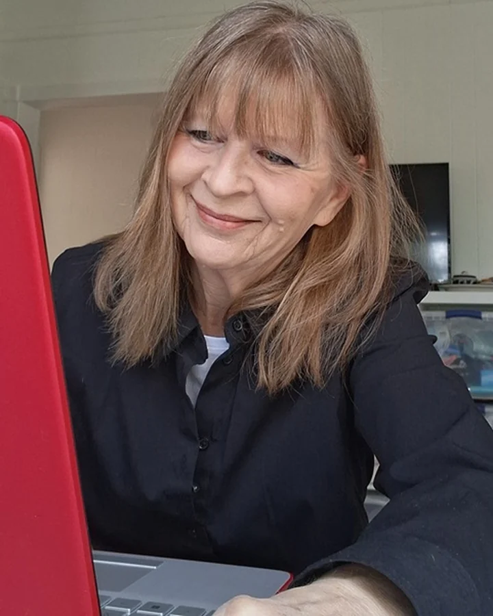
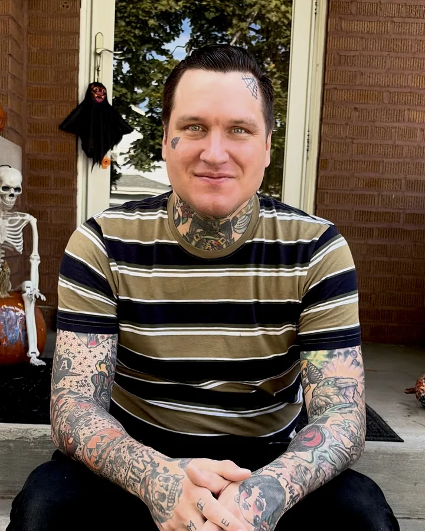

Authors
Meet the writers of Bipedal Press. Their books are on the way.
David Ridd
Author of RIDESHARE: A Prelude, the first book from Bipedal Press.
RIDESHARE: A Prelude is our first book.

K.M. Carter
Writer and screenwriter living in Georgia.
Her book with Bipedal Press will be announced soon.
Anthony Raymond
A writer in San Francisco whose career has been in organ donation and transplant.
His first novel with Bipedal Press will be announced soon.

Adam Galanski-De León
Author of The Laughter of Hyenas at Bay and Bastards in Oxblood. Winner of the Buffalo Books Prize in Fiction 2022.
His next book with Bipedal Press will be announced soon.
Sarah Leonard
Writes dark, character-driven fiction steeped in Southern secrets.
Her book with Bipedal Press will be announced soon.
Jesse Miller
Associate Teaching Professor of Writing and Communications at the University of New England.
His next book with Bipedal Press will be announced soon.
Have a book of your own? Read our submission guidelines.